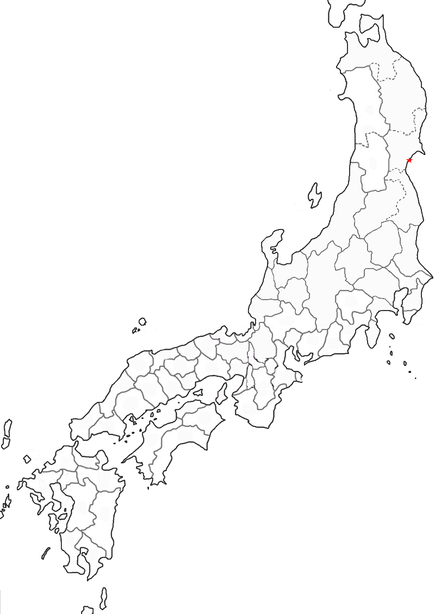

Poem #326 
浦ちかくふりくる雪は白浪の末の松山こすかとぞ見る
ura chikaku
furikuru yuki wa
shiranami no
sue no matsuyama
kosu ka to zo miru
furikuru yuki wa
shiranami no
sue no matsuyama
kosu ka to zo miru
Gazing at snowflakes
as they blow in near the shore,
we wonder if waves
might not indeed pass over
Sue-no-matsu Mountain.
as they blow in near the shore,
we wonder if waves
might not indeed pass over
Sue-no-matsu Mountain.

Background Information
The Pine tree or trees (or the peak on which they stand), perhaps near Matsuhima and, in any case, in Mutsu (Rikuzen). Poets used the place name to involve the idea that only some unwelcome or great change could bring waves over the rise or its pines. Love poets adapted the idea for accusations of infidelity, as in the Kokinshu. Murasaki Shikibu followed suit on more than one occasion. (Miner et al.)
“If my heart is untrue, then let the waves roll over Suematsu Mountain” (adashi kokoro wo motsu to nami ga koeru). Suematsu mountain was often used to denote something incredibly unlikely (Kaori). Similar to the English saying “when hell freezes over”.